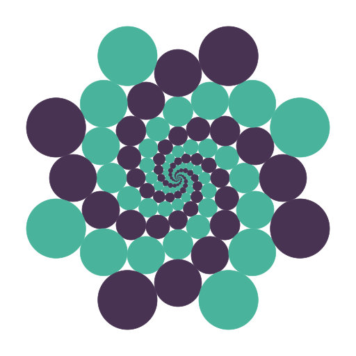
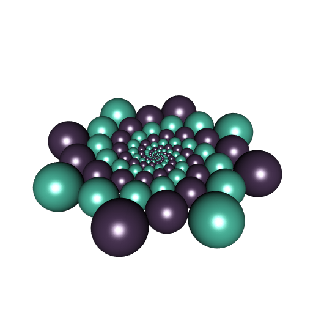
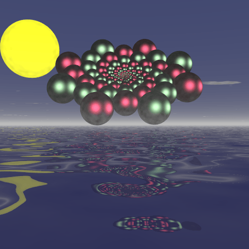

The Doyle spiral with R
Posted on July 8, 2023
by Stéphane Laurent
I translated to R the JavaScipt code for the Doyle spiral written by Robin Houston and kindly provided in this gist.
library(rootSolve) # for the function multiroot
library(plotrix) # for the function draw.circle
d_ <- function(z, t, p, q) {
w <- z^(p/q)
s <- (p*t + 2*pi)/q
(z*cos(t) - w*cos(s))^2 + (z*sin(t) - w*sin(s))^2
}
s_ <- function(z, p, q) {
(z + z^(p/q))^2
}
r_ <- function(z, t, p, q) {
d_(z, t, p, q) / s_(z, p, q)
}
Doyle <- function(p, q) {
f_ <- function(z, t) {
r_(z, t, 0, 1) - r_(z, t, p, q)
}
g_ <- function(z, t) {
r_(z, t, 0, 1) - r_(z^(p/q), (p*t + 2*pi)/q, 0, 1)
}
model <- function(x) c(F = f_(x[1], x[2]),
G = g_(x[1], x[2]))
ss <- multiroot(f = model, start = c(2, 0),
maxiter = 1000, atol = 1e-6, rtol = 1e-6)
z <- ss$root[1L]
t <- ss$root[2L]
r <- sqrt(r_(z, t, 0, 1))
a <- complex(real = z * cos(t), imaginary = z * sin(t))
coroot <- c("z" = z^(p/q), "t" = (p*t + 2*pi)/q)
b <- complex(
real = coroot["z"] * cos(coroot["t"]),
imaginary = coroot["z"] * sin(coroot["t"])
)
list("a" = a, "b" = b, "r" = r, "mod_a" = z, "arg_a" = t, "q" = q)
}
spiral <- function(r, start_point, delta, opts, alpha, scale) {
mod_delta <- Mod(delta)
colors <- opts[["fill"]]
min_d <- opts[["min_d"]]
max_d <- opts[["max_d"]]
w <- exp(1i * alpha)
out <- matrix(nrow = 0L, ncol = 4L)
# spiral outwards
color_index <- opts[["i"]]
q <- start_point
mod_q <- Mod(q)
while(mod_q < max_d) {
col <- colors[color_index]
center <- scale * q * w
out <- rbind(
out,
c(Re(center), Im(center), r * scale * mod_q, color_index)
)
draw.circle(
Re(center), Im(center), r * scale * mod_q, col = col, border = col
)
color_index <- ifelse(color_index < length(colors), color_index + 1, 1)
q <- q * delta
mod_q <- mod_q * mod_delta
}
# spiral inwards
i <- opts[["i"]]
color_index <- ifelse(i > 1, i-1, length(colors))
q <- start_point/delta
mod_q <- Mod(q)
while(mod_q > min_d) {
col <- colors[color_index]
center <- scale * q * w
out <- rbind(
out,
c(Re(center), Im(center), r * scale * mod_q, color_index)
)
draw.circle(
Re(center), Im(center), r * scale * mod_q, col = col, border = col
)
color_index <- ifelse(color_index > 1, color_index-1, length(colors))
q <- q / delta
mod_q <- mod_q / mod_delta
}
out
}
frame <- function(t, root, max_d, limits = c(-max_d, max_d)) {
scale <- root$mod_a^t
alpha <- root$arg_a * t
start <- root$a
min_d <- 1/scale
out <- matrix(nrow = 0L, ncol = 4L)
par(mar = c(0, 0, 0, 0))
plot(NULL, asp = 1, xlim = limits, ylim = limits,
xlab = NA, ylab = NA, axes = FALSE)
for(i in 1:root$q) {
cc <- spiral(root$r, start, root$a,
list(
fill = c("#49B49B", "#483352"),
i = 1 + i %% 2,
min_d = min_d,
max_d = max_d
), alpha, scale)
start <- start * root$b
out <- rbind(out, cc)
}
colnames(out) <- c("x", "y", "r", "colIndex")
out
}
# plot a Doyle spiral ####
root <- Doyle(p = 8, q = 16)
M <- frame(0, root, 600)The frame function generates a plot of a Doyle spiral:

It also returns a matrix providing the centers and the radii of the circles, and the color index of each circle. This allowed me to plot the Doyle spiral in 3D with rgl:
library(rgl)
library(Rvcg)
unitSphere <- vcgSphere(4)
cols <- c("#49B49B", "#483352")
open3d(windowRect = 50 + c(0, 0, 512, 512))
view3d(0, -55, zoom = 0.85)
for(i in 1:nrow(M)) {
sph <- translate3d(
scale3d(unitSphere, M[i,"r"], M[i,"r"], M[i,"r"]),
M[i, "x"], M[i,"y"], 0
)
shade3d(sph, color = cols[M[i, "colIndex"]])
}
# animation ####
movie3d(spin3d(axis = c(0, 0, 1), rpm = 10),
duration = 6, fps = 10,
movie = "zzpic", dir = ".",
convert = FALSE, webshot = FALSE,
startTime = 1/10)
library(gifski)
pngs <- Sys.glob("zzpic*.png")
gifski(
png_files = pngs,
gif_file = "Doyle_8-16.gif",
width = 512,
height = 512,
delay = 1/8
)
file.remove(pngs)
And also with POV-Ray:
